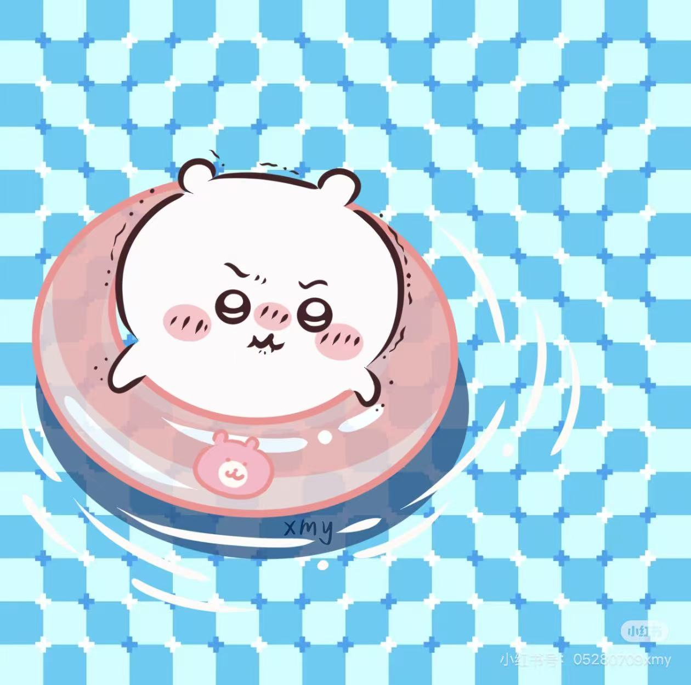

Kristen（祁祁）
学校：华侨大学
班级：2022级3班
星座：天蝎座
爱好：钢琴、吉他、游泳
家乡：中国，山东
关于我
Hello，我是 Kristen（祁祁），一名对技术与生活充满热爱的学生。从小我就对世界充满好奇，在大学的学习时光里，不仅专注于专业知识的汲取，也积极探索自己的兴趣爱好。
我热爱钢琴、吉他，音乐能给我带来心灵的慰藉与创作的灵感；同时我也钟情于游泳，在水中能让我放松身心，感受运动的快乐。我的家乡是山东，那里有壮丽的泰山、深厚的儒家文化，还有美丽的海滨城市，这些都塑造了我对生活和世界的认知。
未来，我希望能在自己热爱的领域不断成长，将所学所好更好地融合，创造出有价值的东西。如果你对我的经历感兴趣，或者有任何交流的想法，欢迎随时联系我！
我的爱好
我热爱音乐与运动，闲暇时会通过弹奏乐器放松心情，也喜欢在水中享受运动的乐趣，主要爱好包括钢琴、吉他和游泳。
钢琴
吉他

游泳
我的家乡
我的家乡是山东省，它位于中国东部沿海，是中华文明的重要发祥地之一，拥有丰富的历史文化遗产和壮丽的自然风光。这里有五岳之首的泰山、儒家文化发源地曲阜，也有迷人的海滨城市青岛、烟台，兼具厚重历史与活力生机。
泰山
曲阜三孔
青岛海滨